Detta, fotografa e correggi
Il telefono detta le parole della settimana, tuo figlio scrive sul quaderno e una foto mostra parola per parola cosa ripassare. La foto non viene salvata.
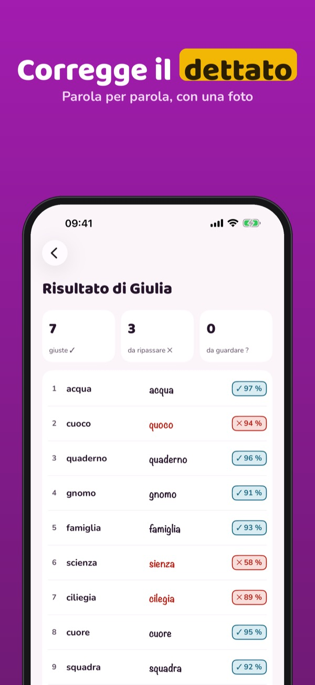
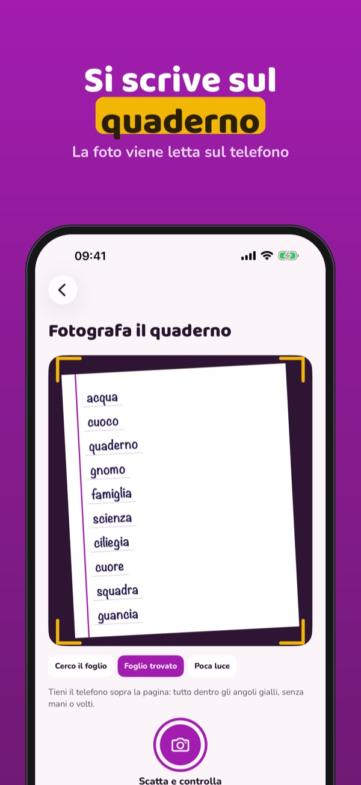
Dictilo porta a casa il dettato della scuola: su carta, con la matita. Aggiungi le parole della settimana, il telefono le legge ad alta voce e controlla la pagina con una foto.
Una lista nuova a settimana, il dettato con la voce, il controllo con la foto e il ripasso si usano senza acquisto. Dictilo Plus è un acquisto unico: liste senza limiti, dettato di frasi, fino a 4 bambini, errori più frequenti e invio delle liste. Nessun abbonamento.
Dictilo serve a esercitarsi a casa: non sostituisce l’insegnante e non è collegato ad alcuna scuola. La lettura della scrittura a mano può sbagliare: puoi sempre correggere il risultato. Nessun account per i bambini, nessuna pubblicità.
Terms of Use (EULA): https://www.apple.com/legal/internet-services/itunes/dev/stdeula/
Privacy: https://baytechbv.github.io/privacy/dictilo-eu/
Dicta, fotografía y corrige
El móvil dicta las palabras de la semana, tu hijo escribe en el cuaderno y una foto muestra palabra por palabra qué repasar. La foto no se guarda.
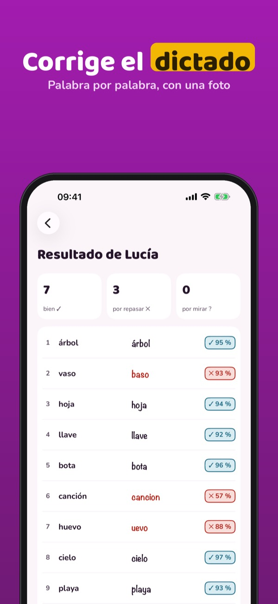
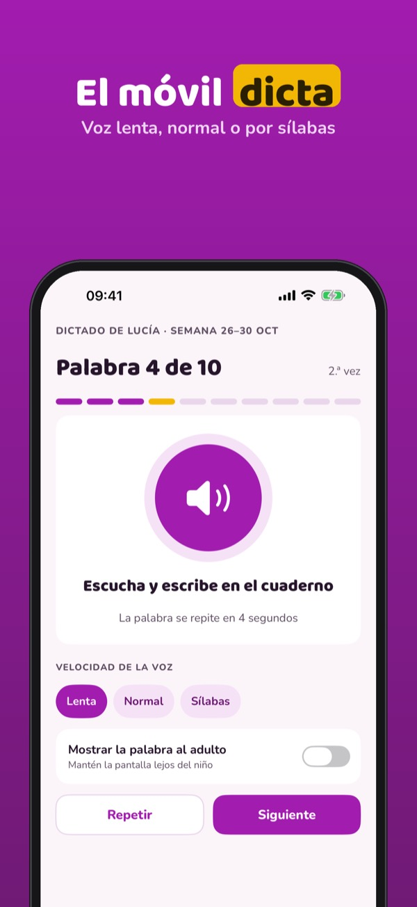
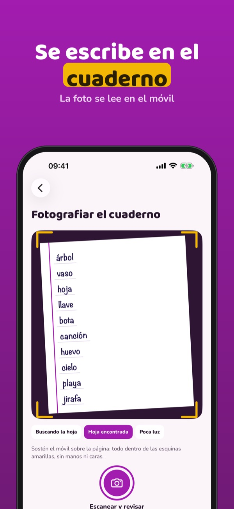
Dictilo lleva a casa el dictado del colegio: en papel y con lápiz. Añade las palabras de la semana, el móvil las lee en voz alta y revisa la página con una foto.
Una lista nueva a la semana, el dictado con voz, la revisión con foto y el repaso se usan sin compra. Dictilo Plus es una compra única: listas sin límite, dictado de frases, hasta 4 hijos, errores más frecuentes y envío de listas. Sin suscripción.
Dictilo sirve para practicar en casa: no sustituye al profesorado y no está vinculado a ningún colegio. La lectura de la letra a mano puede fallar: siempre puedes corregir el resultado. Sin cuentas para niños y sin publicidad.
Terms of Use (EULA): https://www.apple.com/legal/internet-services/itunes/dev/stdeula/
Privacy: https://baytechbv.github.io/privacy/dictilo-eu/
Voorlezen, schrijven, nakijken
Je telefoon leest de woorden van de week voor, je kind schrijft in het schrift en een foto laat per woord zien wat goed ging. De foto wordt niet bewaard.
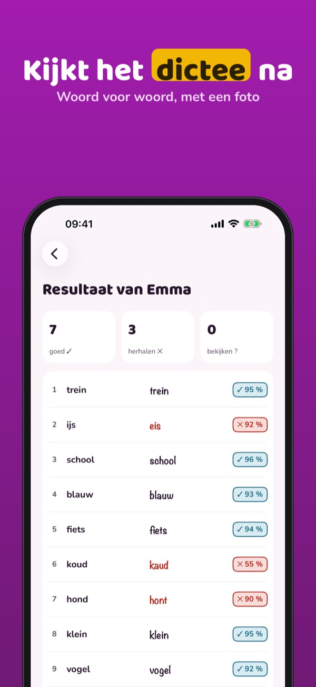
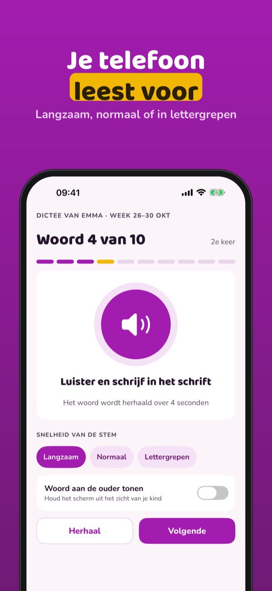
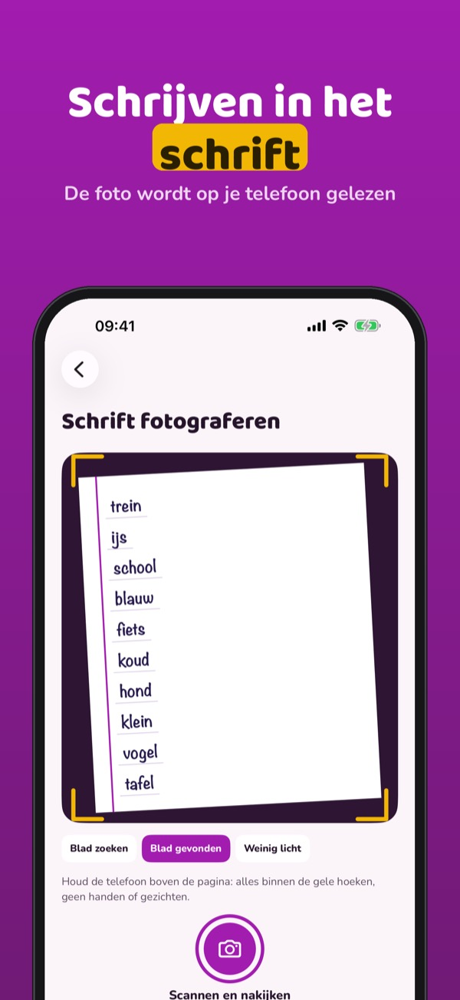
Dictilo brengt het dictee van school naar huis: op papier, met potlood. Voeg de woorden van de week toe, je telefoon leest ze voor en kijkt de pagina na met een foto.
Eén nieuwe lijst per week, het dictee met stem, het nakijken met een foto en de herhaling gebruik je zonder aankoop. Dictilo Plus is een eenmalige aankoop: onbeperkt lijsten, zinnendictee, tot 4 kinderen, meest gemaakte fouten en lijsten versturen. Geen abonnement.
Dictilo is een oefenhulp voor thuis: het vervangt de leerkracht niet en is niet verbonden aan een school. Het lezen van handschrift kan fout gaan: je kunt het resultaat altijd corrigeren. Geen account voor kinderen, geen reclame.
Terms of Use (EULA): https://www.apple.com/legal/internet-services/itunes/dev/stdeula/
Privacy: https://baytechbv.github.io/privacy/dictilo-eu/
Czyta, sprawdza pismo ręczne
Telefon dyktuje słowa na ten tydzień, dziecko pisze w zeszycie, a zdjęcie pokazuje słowo po słowie, co powtórzyć. Zdjęcie nie jest zapisywane.
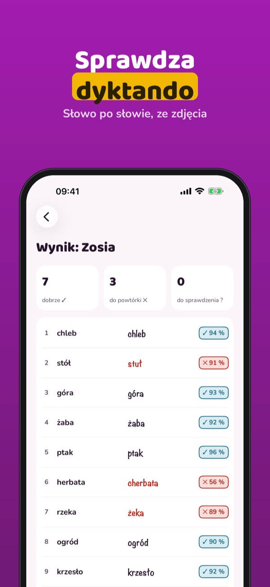
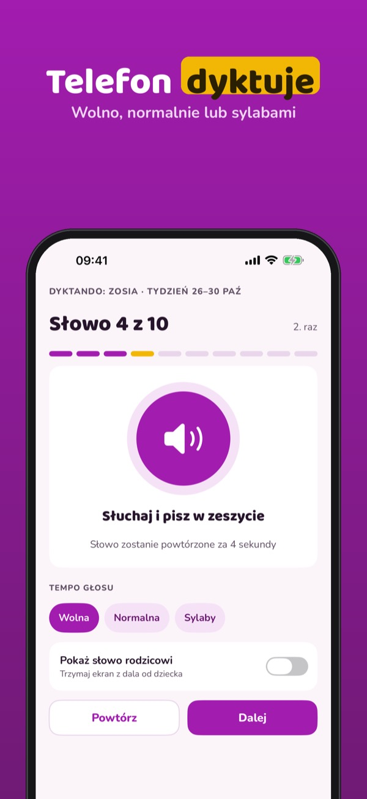
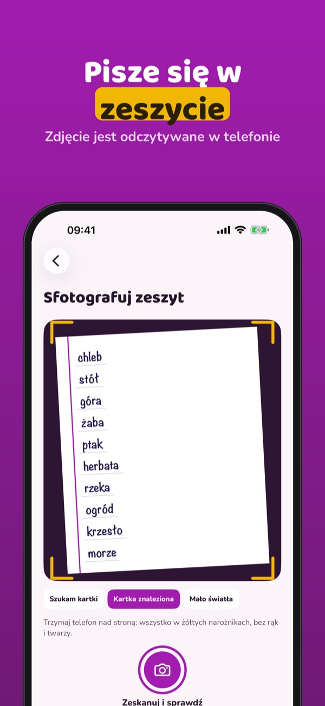
Dictilo przenosi szkolne dyktando do domu: na papierze, ołówkiem. Dodaj słowa na ten tydzień, telefon czyta je na głos i sprawdza stronę na podstawie zdjęcia.
Jedna nowa lista tygodniowo, dyktowanie głosem, sprawdzanie zdjęciem i powtórki działają bez zakupu. Dictilo Plus to jednorazowy zakup: listy bez limitu, dyktanda ze zdaniami, do 4 dzieci, najczęstsze błędy i wysyłanie list. Bez subskrypcji.
Dictilo służy do ćwiczeń w domu: nie zastępuje nauczyciela i nie jest powiązane z żadną szkołą. Odczyt polskiego pisma ręcznego zależy od iPhone’a – gdy nie jest dostępny, sprawdzasz sam (dobrze / źle), a powtórki działają dalej. Odczyt może się mylić: wynik zawsze możesz poprawić. Bez kont dla dzieci i bez reklam.
Terms of Use (EULA): https://www.apple.com/legal/internet-services/itunes/dev/stdeula/
Privacy: https://baytechbv.github.io/privacy/dictilo-eu/
Lecture, photo, correction
Le téléphone dicte les mots de la semaine, votre enfant écrit sur son cahier et une photo montre mot par mot ce qu’il faut revoir. La photo n’est pas gardée.
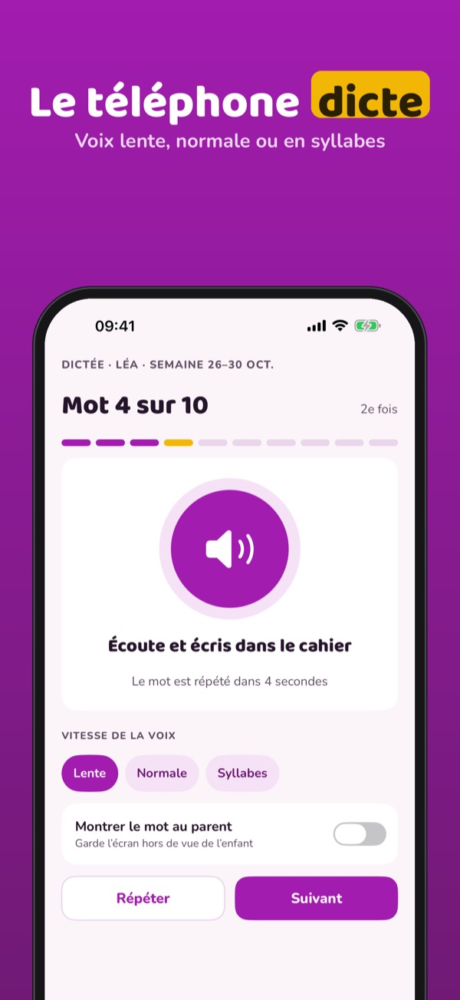
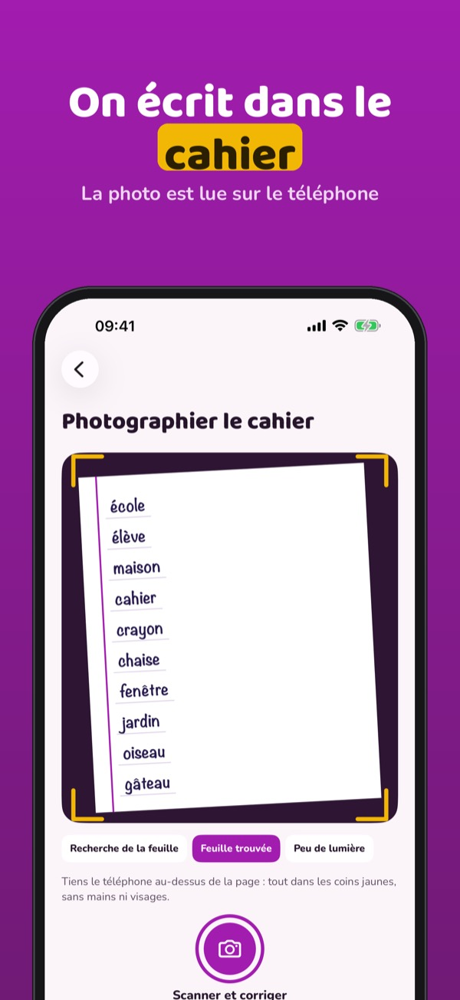
Dictilo ramène la dictée de l’école à la maison : sur papier, au crayon. Ajoutez les mots de la semaine, le téléphone les lit à voix haute et vérifie la page avec une photo.
Une nouvelle liste par semaine, la dictée à voix haute, la correction par photo et la révision s’utilisent sans achat. Dictilo Plus est un achat unique : listes illimitées, dictée de phrases, jusqu’à 4 enfants, erreurs les plus fréquentes et envoi des listes. Sans abonnement.
Dictilo sert à s’entraîner à la maison : il ne remplace pas l’enseignant et n’est lié à aucune école. La lecture de l’écriture manuscrite, surtout cursive, peut se tromper : vous pouvez toujours corriger le résultat. Pas de compte enfant, pas de publicité.
Terms of Use (EULA): https://www.apple.com/legal/internet-services/itunes/dev/stdeula/
Privacy: https://baytechbv.github.io/privacy/dictilo-eu/
Vorlesen, schreiben, prüfen
Das Handy diktiert die Wörter der Woche, dein Kind schreibt ins Heft und ein Foto zeigt Wort für Wort, was es noch üben sollte. Das Foto wird nicht gespeichert.
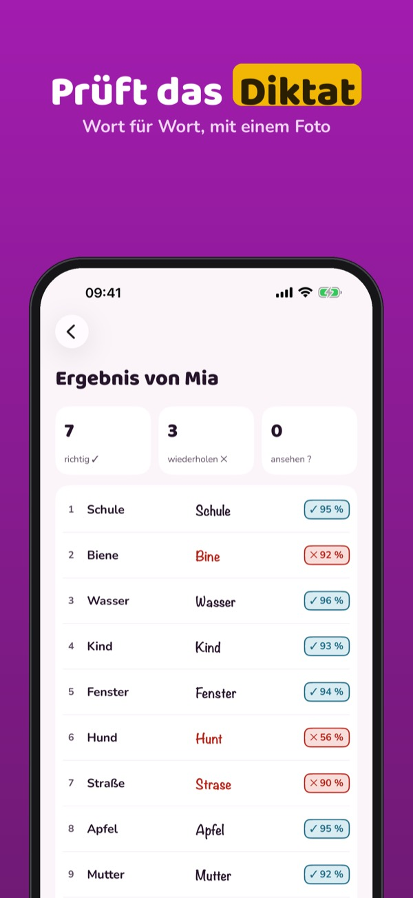
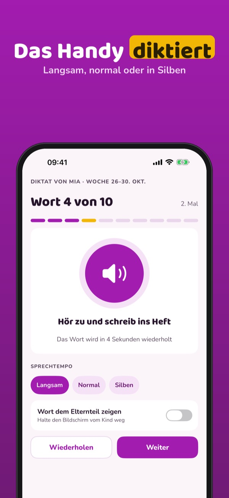
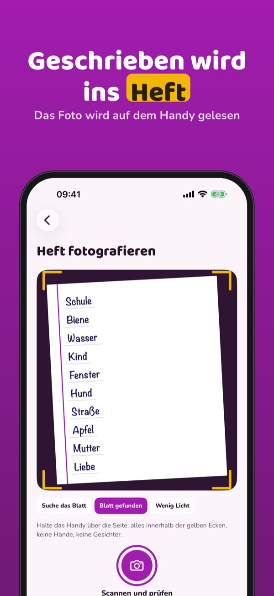
Dictilo holt das Diktat aus der Schule nach Hause: auf Papier, mit Bleistift. Füge die Wörter der Woche hinzu, das Handy liest sie vor und prüft die Seite mit einem Foto.
Eine neue Liste pro Woche, das Diktat per Stimme, die Prüfung per Foto und die Wiederholung sind ohne Kauf nutzbar. Dictilo Plus ist ein Einmalkauf: unbegrenzte Listen, Satzdiktate, bis zu 4 Kinder, häufigste Fehler und Listen senden. Kein Abo.
Dictilo ist eine Übungshilfe für zu Hause: Es ersetzt keine Lehrkraft und gehört zu keiner Schule. Das Lesen von Handschrift kann sich irren: Du kannst das Ergebnis immer korrigieren. Kein Kinderkonto, keine Werbung.
Terms of Use (EULA): https://www.apple.com/legal/internet-services/itunes/dev/stdeula/
Privacy: https://baytechbv.github.io/privacy/dictilo-eu/